Corporate Governance Summit 2008
| Program at a glance: | |
| When? TBA [more] |
|
| What? Corporate Governance Summit featuring thought leaders from industry and academia [more] |
|
| How much? $1,195 early registration, $1,495 after March 7 [more] |
|
| Who? Directors of public, private and non-profit boards, senior executives and senior professionals dealing with governance. [more] |
|
| CPE Eligibility Not eligible. |
|
Dates And Location
Program
Topics
Fee
Schedule
Who Should Attend
Speakers
Hotel Information
ISS and Continuing Education
Registration for the 2008 USC Corporate Goverance Summit is closed.
Dates and Locations
March 20 - March 21, 2008
Davidson Conference Center
USC University Park Campus
Los Angeles, California
| back to top |
The Program
As global leaders in business education, the Marshall School of Business at the University of Southern California has established an annual Corporate Governance Summit featuring thought leaders from industry and academia. USC's inaugural session took place Spring 2006 and featured outstanding speakers such as Don Nicolaisen, Dennis Beresford, and Sharon Allen.
The topics and issues associated with Corporate Governance are quite dynamic and evolving daily and are prominent subjects in our news. These issues will be addressed, discussed, and debated at the USC Corporate Governance Summit 2008.
USC's program, teaming with Resources Global Professionals (Resources), will present Corporate Governance practitioners, experts from the USC Marshall School of Business and the Leventhal School of Accounting, and a wide range of speakers and panelists with hands-on experience.
The program is designed to give directors and executives the information they need to meet the challenges of governance today.
| back to top |
Topics
- Governance and Nominating Committee Best Practices
- Crisis Management: Crisis in the Corner Office
- Shareholder Activism and the Board
- Special Committee: Issues Faced and Director Roles on Committee
- Role of Private Equity
- D & O Insurance: What Directors Should Know
- GAAP: Accounting and Internationalization
- Enterprise Risk Management
- Compensation Committee
- Audit Committee
| back to top |
Fee
$1,195 early registration, $1,495 after March 7 (Does not include accommodations).
| back to top |
Program Schedule
Corporate Governance Summit 2008 Agenda (PDF)
Thursday, March 20 Friday, March 21
| Morning |
KEYNOTE SPEAKER: PANEL: Peter Nolan, Managing Partner, Leonard Green & Parteners PANEL: |
KEYNOTE SPEAKER: PANEL: Simon Lorne, Vice-Chairman & Chief Legal Officer, Millenium Management LLC BREAKOUT SESSION A: BREAKOUT SESSION B: Richard Slater, Former EVP, Jacobs Engineering PANEL: Richard Slater, Former EVP, Jacobs Engineering Stephen Brown, Director & Senior Counsel, Corporate Governance & Business Affair, TIAA-CREF Ashwin Rangan, Former CIO, Wal-Mart Richard Bennett, Chief Executive Officer, The Corporate Library LLC |
| Lunch |
LUNCHEON SPEAKER – Galen Center "The Current Market and Economic Conditions and the Implications to Directors" |
Networking Lunch |
| Afternoon |
BREAKOUT SESSION A: David Seigel, Managing Partner, Irell & Manella BREAKOUT SESSION B: PANEL: PANEL: Bob Rollo, Partner, Heidrick & Struggles Linda Fayne Levinson, Director, Jacobs Engineering Group John Cardis, Director, Avery Dennison Corporation |
Check back frequently for updates to schedule.
| back to top |
Who Should Attend
The program is intended for directors of public, private and non-profit boards, senior executives and senior professionals dealing with governance.
| back to top |
Key Note Speakers
Robert A. Eckert - Chairman and CEO Mattel, Inc.
Mattel is the worldwide leader in the design, manufacture and marketing of toys with approx. $5 billion in annual sales.
The company's rich portfolio of brands includes Barbie®, Fisher-Price®, Hot Wheels®, and American Girl®. Mr. Eckert joined Mattel in May 2000 after a 23 year career at Kraft Fooks, Inc. where he most recently served as its President and CEO.
Paul Haaga - Director, The Capital Group
Paul Haaga is vice chairman of Capital Research and Management Company, as well as chairman of CRMC's Executive Committee. He is chairman of Capital International Fund (Luxembourg SICAV marketed in Europe) and vice chairman of the thirteen fixed-income funds in the American Funds Group and of Capital World Growth and Income Fund. Mr. Haaga is also an officer and/or director of a number of other CRMC-managed mutual funds and a director of The Capital Group Companies.
Prior to joining Capital in 1985, Mr. Haaga was a partner in the law firm of Dechert Price & Rhoads (now known as Dechert) in Washington, D.C. From 1974 to 1977, he was a senior attorney for the Division of Investment Management of the U.S. Securities and Exchange Commission.
Mr. Haaga earned a bachelor's degree in economics from Princeton University, an M.B.A. from the Wharton School and a J.D. from the University of Pennsylvania Law School.
Mr. Haaga is a member of the Executive Committee (chairman from 2002-2004 and vice chairman from 2004-2007) of the Board of Governors of the Investment Company Institute (the national association of the U.S. mutual fund industry) and serves as President of the Board of Trustees of the Los Angeles County Museum of Natural History. He is chairman of the Board of Overseers of the University of Pennsylvania Law School and a trustee of the Huntington Library, Museum and Gardens in San Marino, California. Mr. Haaga is president and major gifts chair for Princeton's Class of 1970 and serves as a trustee of the Princeton Rugby Endowment. He also is a senior fellow and member of the audit committee of the Salzburg Global Seminar in Salzburg, Austria and was a board member from 1998 through 2007.
Mr. Haaga previously has taught a course on mutual fund regulation at Stanford University Law School and served as a trustee of the Polytechnic School in Pasadena, California (board president from 1996-1999) and of Georgetown Preparatory School in North Bethesda, Maryland. He also was chairman of the Investment Companies Committee of NASD Regulation (the primary self-regulatory organization of the U.S. broker-dealer industry).
Michael Tennenbaum - Senior Managing Partner, Tennenbaum Capital Partners LLC
Michael Tennenbaum is Senior Managing Partner of Tennenbaum Capital Partners LLC. Before forming TCP, he served for 32 years in various capacities at Bear Stearns, including Vice Chairman, Investment Banking. His responsibilities at Bear Stearns included managing the firm’s Risk Arbitrage Department, Investment Research Department, Options Department, and its Los Angeles Corporate Finance Department. Mr. Tennenbaum has served on the Boards of many public and private companies, including Bear Stearns Companies, Inc., Tosco Corporation, Jenny Craig, Inc., and Arden Group. He currently serves as Chairman of Pemco Aviation Group, Inc., Chairman of the Board of Anacomp, Inc., and Chairman of WinCup, Inc. Mr. Tennenbaum is Trustee Emeritus of the Georgia Tech Foundation and was Chairman of its Investment Committee; he is Founder of the Tennenbaum Institute for Enterprise Transformation at the Georgia Tech School of Industrial and Systems Engineering. He is a Vice-Chairman of the Board of Governors of the Boys & Girls Clubs of America and Chairman of its investment group; he is a member of the Committee on University Resources (COUR) at Harvard University; he is a Director of the Los Angeles World Affairs Council; he is a Board member for The RAND Center for Asia Pacific Policy; he is a Member of the UCLA School of Medicine Board of Visitors and Founder of the Tennenbaum Interdisciplinary Center at the Neuropsychiatric Institute at UCLA; he is also a member of the Council on Competitiveness, National Innovation Initiative. Mr. Tennenbaum was a member of the Harvard Business School Board of Associates; was a Commissioner on the Intercity High-Speed Rail Commission for California and Chairman of the California High-Speed Rail Authority. He served as Chairman of the Special Financial Advisory Committee to the Mayor of Los Angeles. A graduate of the Georgia Institute of Technology with a degree in Industrial Engineering, Mr. Tennenbaum received an M.B.A. with honors from the Harvard Business School.
Speakers
Dennis Beresford - Former Chairman, FASB
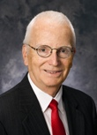Dennis R. Beresford is Ernst & Young Executive Professor of Accounting, J. M. Tull School of Accounting, Terry College of Business, University of Georgia. From January 1987 through June 1997 he was chairman of the Financial Accounting Standards Board. Previously, he was national director of accounting standards for Ernst & Young. He is a graduate of the University of Southern California. In 1995, Mr. Beresford was awarded an honorary Doctor of Humane Letters degree from DePaul University and in 1997 he received the Lifetime Achievement Award from the California Society of CPA's. In 2004 he was elected to the Accounting Hall of Fame and received the AICPA Gold Medal for distinguished service. In 2006 he was selected as one of the inaugural inductees of Financial Executives International’s Hall of Fame. Mr. Beresford is a Director of Fannie Mae, Kimberly-Clark Corporation and Legg Mason, Inc., and he is chairman of the audit committee of each of those corporate boards. From July 2002 through January 2006 he also served on the board of directors of MCI, Inc. (formerly WorldCom, Inc.) before MCI was merged into Verizon Communications. In July 2007, Mr. Beresford was appointed to the SEC Advisory Committee on Improvements to Financial Reporting.
Duke Bristow - Professor, USC Marshall School of Business
Duke Kevin Bristow received his PhD in Financial Economics in 1998 from the University of California, Los Angeles. He is widely known for his research on corporate finance and corporate governance, particularly in the areas of private equity and director education. Dr. Bristow has published papers in economics, engineering and law journals. He has advised Corporate Board Members on matters involving corporate governance and director education since 2000. His diverse research has received support from, the NIH, the NASDAQ, the four largest international audit firms and a dozen national law firms. Dr. Bristow is a director of Landec Corp., and Chairman of the National Corporate Governance Conference in Los Angeles, CA. Dr. Bristow has consulted for a variety of organizations, including Pacific Capital Bancorp and CancerVax.
Simon Lorne - Vice-Chairman & Chief Legal Officer, Millehium Management LLC
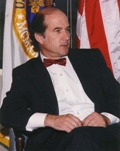Simon M. Lorne is vice chairman and chief legal officer of Millennium Management LLC, a multi-strategy New York-based hedge fund manager, with primary responsibility for the development, enhancement and oversight of the internal control environment as well as preparation for and attention to the evolving regulatory environment for hedge funds.
Prior to joining Millennium, he was at Munger, Tolles & Olson LLP, Los Angeles, from 1970 to 1993 and again from 1999 to 2004, serving as partner from 1972. Mr. Lorne’s private law practice focused on corporate governance issues, particularly special committee and audit committee reviews and examinations and corporate transactions (mergers & acquisitions, corporate finance, etc.) more broadly.
From 1993 to 1996 he was general counsel of the U.S. Securities & Exchange Commission, serving as its principal legal officer. Between 1996 and 1999 Mr. Lorne was a managing director, Salomon Brothers and Salomon Smith Barney, New York (now Citigroup Global Markets, Inc.) and held a series of positions within what is today known as Citigroup.
Mr. Lorne received a J.D. (magna cum laude) from the University of Michigan Law School and an A.B. (cum laude) from Occidental College, Los Angeles, California. He is the author of one multi-volume treatise (Acquisitions and Mergers: Negotiated and Contested Transactions in the West Securities Law Series), one handbook for corporate directors (A Director’s Handbook of cases, published by CCH Incorporated) and a number of monographs and articles in the popular and legal press, the most recent of which is B.N.A., Tax and Accounting Portfolio 5402, Internal Controls: Sarbanes-Oxley §404 and Beyond (Accounting Policy and Practice Series) (2006) (with Kathleen Smalley and Jeffrey L. Schultz). He is also a frequent speaker and lecturer, and has taught at the University of Pennsylvania, the University of Southern California and the New York University law schools as well as the Stern School of Business at NYU. Since 1999 he has been co-director of Stanford Law School’s Directors’ College, the nation’s premiere program for the education of corporate directors, and he currently serves as an independent director of two public companies.
Jim Campbell - Vice President & Corporate Controller, INTEL Corporation
James G. Campbell is vice president of Finance and Enterprise Services and corporate controller. He is responsible for global accounting, financial services and financial reporting. Mr. Campbell also leads and manages the international controllers responsible for financial services, statutory compliance and business support for the Technology and Manufacturing Group and Sales and Marketing Group for all locations outside of the U.S. Mr. Campbell joined Intel in 1981. Previously, Mr. Campbell was based in Europe, responsible for Intel's international finance operations. He has also been manager of Intel's Financial Information Systems, responsible for designing, developing and implementing Intel's internally used financial applications. In addition, he has served as Asia regional audit manager, Microprocessor Group Controller and European controller. Before joining Intel, Mr. Campbell worked for Itel Corporation. Mr. Campbell received his bachelor's degree in business and accounting from California State University, Hayward in 1980. He holds a CPA license and is a member of the Financial Executives International Committee on Corporate Reporting and the Public Accounting Oversight Board Standing Advisory Group.
Bill Coffin - CEO, CCG Investor Relations
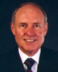Mr. Coffin is CEO of CCG Investor Relations and has been an investor relations counselor for more than 25 years. As an investor relations professional, Mr. Coffin is an advisor to numerous publicly held and private companies in a broad range of industries including healthcare, communications technologies, financial services, leisure and e-commerce. Mr. Coffin has assisted numerous clients in various corporate finance matters including more than 150 initial public offerings and follow-on financings, and has counseled and participated in a broad range of mergers and acquisitions. CCG Investor Relations is the largest independent investor relations agency on the West Coast, providing a full range of investor relations services to publicly held corporations, as well as privately held corporations intending to go public. The principal services of the agency include: public disclosure and corporate governance advice, preparation of shareholder reports, corporate website design, crisis management, corporate media, and institutional investor targeting and contact. Mr. Coffin has served on boards of directors of several publicly-held companies and was Chairman of the Board of the California State University Foundation, which provides private funding to the 23-campus California state university system. He is currently Chairman of the California Council on Economic Education, a nonprofit nonpartisan consortium of education, business, political and labor leaders dedicated to advancing economic literacy throughout California. Mr. Coffin received his Bachelor of Science degree in Business Administration from California State University, Los Angeles, and participated in the MBA program in the Anderson Business School at UCLA. Mr. Coffin is married to Virginia, and has three children, Hardy, Michelle and Christopher.
Rich Corgel - Executive Director, Ernst & Young LLP
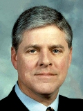Richard Corgel is an Executive Director in the Fraud Investigations and Dispute Services practice of Ernst & Young LLP. Mr. Corgel brings over 35 years of experience dealing with complex accounting, financial reporting, SEC, and auditing matters. Mr. Corgel specializes in financial investigations conducted independently for Audit/Special Committees under Section 10A, and management directed investigations, analysis, and remediation. Mr. Corgel frequently works with legal counsel regarding regulatory and litigation strategies relating to the resolution of complex financial issues.
In addition to investigative and forensic expertise, Mr. Corgel has directed and conducted numerous financial audits, purchase and due diligence investigations, internal control reviews, and other projects requiring financial/forensic skills. Mr. Corgel also assists public company boards and audit committee members with the increasing complexity of their responsibilities as they relate to corporate governance, internal controls, and financial reporting.
Prior to joining Ernst & Young, Mr. Corgel directed the West Coast investigations practice of Navigant Consulting, Inc. Before that, Mr. Corgel was an audit partner and practice director with Arthur Andersen LLP. Mr. Corgel holds a bachelor’s degree in finance and accounting and a master’s degree in tax accounting from Syracuse University. He is a certified public accountant, licensed in California, and a member of the AICPA.
Peter Nolan - Managing Partner, Leonard Green & Partners
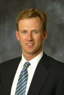Peter joined Leonard Green & Partners in 1997.
Previously Peter was a Managing Director and Co-Head of DLJ's Los Angeles Investment Banking Division, which he joined in 1990, and where he worked extensively with LGP, assuming the role of its lead investment banker in 1995.
During his time at DLJ, Peter helped to build the Los Angeles investment banking office to the largest regional presence in the nation with over 100 professionals and acted as advisor to entities such as adidas AG, the Government of Mexico, Saatchi & Saatchi PLC, Televisa S.A. and Orion Pictures.
Prior to DLJ, Peter had been a First Vice President in corporate finance at Drexel from 1986 to 1990, a Vice President at Prudential Securities, Inc. from 1982 to 1986 and an Associate at Manufacturers Hanover Trust.
Peter presently serves on the Board of Directors of AsianMedia Group, LLC, Claim Jumper Restaurants, LLC, FTD Group, Inc., Motorsport Aftermarket Group, Scitor Corporation and Activision.
Peter has served on the Board of Directors of Liberty Group Publishing, Inc., VCA Antech, Inc., Wavetek Corporation, White Cap Industries, LLC, and the Supervisory Board of adidas AG.
In addition, Peter serves as a trustee of Cornell University and as a member of the Investment Committee for its endowment.
He earned a Bachelor of Science degree in Agricultural Economics and Finance from Cornell University and an M.B.A. from the Johnson Graduate School of Management at Cornell University.
Chris Crawford - Senior Vice President & Regional Practice Leader, Willis Executive Risks
Mr. Crawford has extensive experience with financial products insurance with 14 years as a broker and five prior as an underwriter. He was responsible for managing the development of best practices and growth for financial insurance services for Marsh in Los Angeles, Newport Beach and Nevada (representing over $200 million in insurance premiums placed annually) and now has responsibility for Southern California, Arizona and Nevada with Willis. Mr. Crawford has grown the revenue and clientele for the Willis Executive Risks team in the SouthWest Region by 300% since the beginning of 2006. He has also been a Client Advisor, where he managed the marketing, placement and servicing of Directors & Officers Liability, Employment Practices Liability, Fiduciary and various Errors & Omissions insurance coverage. Mr. Crawford has served as the lead advisor in D&O placements for over 20 IPOs and has specialized in the negotiation and structure of placements for difficult client risks, as well as resolution of complex claims and corresponding renewals. He has also been the regional representative for Mergers & Acquisitions Product initiatives for a major insurance broker.
Colleen Cunningham - Regional Managing Director, Resources Global Professionals
Colleen Cunningham was named Regional Managing Director, Tri-State (new Jersey, New York and Connecticut) for Resources Global Professionals (RGP) in June 2007. In this role, she oversees the operations, financials and recruiting while mentoring teams and offering strategic guidance to the six practices within the region. She is also the Global Service Line Leader for RGP’s Accounting & Finance practice. Prior to joining RGP, she was President and CEO of Financial Executives International (FEI) for four years. FEI is the professional association of choice for senior-level corporate financial executives and the leading organization dedicated to advancing ethical, responsible financial management. Serving 15,000 members from all industries, the global association is a proactive advocate, working with regulators and legislators on behalf of the membership. In her role, she had significant influence in legislative and regulatory matters including Sarbanes Oxley, Rating Agency reform, pension reform and accounting standard setting. She testified before Congressional committees on many of these issues. She began her career in public accounting with the firms formerly known as Touche Ross and Coopers & Lybrand. She then spent thirteen years with AT&T as Assistant Controller of AT&T Capital, and later as Vice President and Chief Accountant at AT&T Corporate where she was part of the leadership team that executed the Lucent and AT&T Wireless initial public offerings. Cunningham also served as Senior Vice President and Chief Financial Officer, North America, of Havas Advertising (NASDAQ: HAVS), at the time, the fifth largest advertising holding company in the world. At Havas, Cunningham was responsible for North American financial operations, including real estate, human resources, tax, controller and treasury functions, SEC and U.S. GAAP reporting and worldwide accounting policies, as well as establishing and staffing the company’s North American headquarters. Cunningham has frequently been named as one of the top 100 influential people in finance by Treasury & Risk Management magazine, one of the top 100 influential people in accounting by Accounting Today, and one of the 60 top influencers in finance by Business Finance. She spent several years as a member of the standards advisory committees of both the FASB and the IASB. She has appeared as a subject matter expert on several financial related television shows and is widely published in financial magazines. She is currently a columnist for Compliance Weekly and sits on the Board of Directors for the Ethics Resource Center, and chairs its Finance Committee, and the Advisory Committee to Pennsylvania State University’s Accounting Department. Cunningham earned a BA in Economics from Rutgers University in New Brunswick, NJ, and an MBA in Management from NYU’s Stern School of Business in New York City, where she was a Stern Scholar in the Executive Management Program. She resides in Rockaway Township, New Jersey with her husband Todd and their five children.
Paul Dawes - Partner, Latham & Watkins
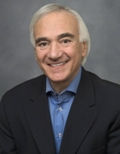Paul H. Dawes is the former National Chair of the firm's Litigation Department, which consists of approximately 500 lawyers. His practice focuses upon complex business litigation, investigations and also advice to boards of directors and committees of publicly owned corporations. He has tried many jury and non-jury cases involving corporate and securities matters, intellectual property disputes and regulatory authority investigations, having represented clients in the computer, software, brokerage, automobile, banking, hotel, gaming, news, investment, electronics, communications, health care, biotechnology, real estate and energy industries. He also has handled a wide variety of domestic and international arbitrations and mediations for diverse clients. He obtained the largest arbitration award in the history of the Court of Arbitration of the ICC. After a nationwide peer-review survey of 24,000 leading attorneys throughout the country, Mr. Dawes was selected again by his peers for inclusion in The Best Lawyers in America® 2007, in the specialties of Commercial Litigation, Corporate Law and Securities Law. Named one of America's Leading Business Lawyers in Chambers USA 2003-2004 and 2005-2006, Mr. Dawes was singled out for the "absolute clarity and business sense" that he brings to complex business litigation and securities. He was also noted by Chambers USA as an "outstanding trial lawyer" and singled out for his highly regarded work in commercial and securities litigation. In 2004, 2005 and 2007, he was recognized as a Northern California Super Lawyer by San Francisco Magazine and as one of California's Top 30 Securities Litigators by The Daily Journal. Mr. Dawes was also voted by ALM among The Best Lawyers in America® 2005 and 2006 and by Bay Area Lawyer Magazine as one of the Best Lawyers in the Bay Area in 2005. Most recently, Mr. Dawes was selected for inclusion in the 25th anniversary edition of The Best Lawyers in America® 2008, in the specialties of Commercial Litigation, Corporate Law and Securities Law. Mr. Dawes is recognized as a leading litigator in the Euromoney Institutional Investor Benchmark: Litigation 2008 guide, with the guide noting that he is "terrific in securities." Mr. Dawes served on the Council of the American Bar Association's Litigation Section (the governing body of the 60,000-member group), was co-chair of the Section's Business Torts and Corporate Counsel Committees, as well as a member of its Task Force of the Judiciary. He was Chair of the Committee on Securities Litigation for the Bar Association of San Francisco. He is a member of the American Law Institute. Mr. Dawes has been an active lecturer on litigation programs sponsored by the Practicing Law Institute (thirteen consecutive years), the California Continuing Education of the Bar, Prentice Hall-Law and Business, the Association of Business Trial Lawyers, the Directors' Roundtable, Thomson West and the American Bar Association. Mr. Dawes served as a law clerk to Chief Judge David N. Edelstein, United States District Court for the Southern District of New York, in 1970-72. In addition to his bar-related activities, Mr. Dawes belongs to the International Myeloma Foundation.
Ben Buettell, Managing Director, Houlihan Lokey
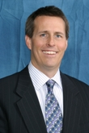Mr. Buettell is a Managing Director and head of the Financial Opinion & Advisory Services (FAS) Group in Houlihan Lokey’s Chicago office. He also serves as Co-Head of the firm’s Fairness Opinion Practice and as National Director of the firm’s Solvency Opinion Practice. He has over 19 years of experience providing financial advisory services to public and private clients in connection with mergers and acquisitions, leveraged buyouts, spin-offs, recapitalizations, going-private transactions, and strategic alternative assessments. In addition, Mr. Buettell renders fairness, solvency and transaction-related opinions to companies, boards of directors, special committees, financial institutions and independent fiduciaries.
Prior to joining Houlihan Lokey, Mr. Buettell worked for a Chicago-based financial institution as a commercial loan officer serving privately held, middle-market companies. He earned his B.A. in economics from Northwestern University and a Master of Management in finance and management policy from Northwestern University’s J.L. Kellogg Graduate School of Management. Mr. Buettell is a frequent speaker at corporate symposiums and seminars on a variety of corporate finance topics. He is licensed with the NASD as a General Securities Registered Principal (Series 7, 63, 24). Mr. Buettell also serves on the Board of Directors of Euclid Beverage Ltd., the advisory board of Egg Innovations, LLC and the Boys & Girls Clubs of Chicago Board of Directors.
Rick Funston - Principal & National Practice Leader, Deloitte & Touche LLP
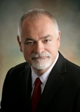Rick Funston is a principal and serves as the national practice leader for Deloitte & Touche LLP's Governance & Risk Oversight services. He is one of the firm’s leading experts on Risk Intelligence and Enterprise Risk Management. Mr. Funston typically works with the boards and senior executives of large, complex and global enterprises across a wide range of industry sectors. These sectors include, for example, consumer business, telecom, technology, manufacturing, life sciences, distribution and logistics as well as the public sector. Mr. Funston has led the development of many of Deloitte’s methodologies and tools to support improved Risk Intelligence including application within Deloitte itself. He is a frequent speaker on creating and sustaining risk intelligence. Mr. Funston has also written numerous articles on ERM and risk intelligence and is currently writing a book on the “The Risk Intelligent Enterprise™”.
Richard Slater - Former EVP, Jacobs Engineering
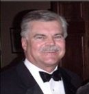Richard Slater currently serves as Strategic Advisor to the CEO’s/Boards of Directors of publicly-traded and private companies in the U.S. and Europe. He is also an active investor in early-stage technology and service industry companies, and is a member of the Pasadena Angels.
He is a Member of the Executive Committee of the Board of Trustees of Claremont Graduate University and Chair of their Business and Finance Committee
He serves as an independent Member of the Board of Directors of Reliance Steel & Aluminum Co (NYSE-RS), and as a member of their Nominations and Governance and Compensation Committees, and of KBR (NYSE-KBR) -- a recent IPO and “split” from Halliburton – and as Chairman of their Health and Safety Committee and as a member of their Nominations and Governance Committee. He is a Member of the National Association of Corporate Directors.
Richard Slater previously spent 26 years with Jacobs Engineering (NYSE – JEC), an $8 billion global provider of professional technical services, including engineering and construction. He joined Jacobs in 1980, was elected an executive officer in 1984, subsequently headed Global Sales and Marketing, and International Operations, and ultimately - as Executive Vice President and Member of the Office of the CEO - headed world-wide operations for 5 years until 2003. He acted as advisor to the CEO until retiring in 2006. Prior to Jacobs, he spent 12 years in the mining and metals industry with Selection Trust and Envirotech; based in Europe but living and working in several overseas countries.
Born and educated in the U.K., Richard Slater and his wife of French birth, Marie-Christine, now reside in Pasadena, California: both are naturalized Americans.
Bob Herz - Chair, FASB
 Robert H. Herz was appointed Chairman of the Financial Accounting Standards Board (FASB), effective July 1, 2002. Previously, he was a senior partner with PricewaterhouseCoopers.
Robert H. Herz was appointed Chairman of the Financial Accounting Standards Board (FASB), effective July 1, 2002. Previously, he was a senior partner with PricewaterhouseCoopers.
Prior to joining the FASB, Mr. Herz was PricewaterhouseCoopers North America Theater Leader of Professional, Technical, Risk & Quality and a member of the firm’s Global and U.S. Boards. He was also President of the PricewaterhouseCoopers Foundation which supports college and university activities. He also served as a part-time member of the International Accounting Standards Board. Mr. Herz is both a Certified Public Accountant and a Chartered Accountant and a gold medal winner on the uniform CPA examination.
Mr. Herz joined Price Waterhouse in 1974 upon graduating from the University of Manchester in England with a B.A. first class honors degree in economics graduating top of his class. He later joined Coopers & Lybrand becoming its senior technical partner in 1996 and assumed a similar position with the merged firm of PricewaterhouseCoopers in 1998.
During his distinguished career, Mr. Herz headed Coopers & Lybrand’s corporate finance practice and served as audit partner on numerous major clients including AT&T, Dun & Bradstreet, Goldman Sachs, Shearson Lehman Bros, and Volvo.
Mr. Herz has authored numerous publications on a variety of accounting, auditing and business subjects, including the book, The Value Reporting Revolution: Moving Beyond the Earnings Game, which he co-authored. He is regularly quoted in the major news media and has appeared on a number of television and cable business shows.
Among Mr. Herz’s other activities, he chaired the AICPA SEC Regulations Committee and the Transnational Auditors Committee of the International Federation of Accountants, and served as a member of the Emerging Issues Task Force, the FASB Financial Instruments Task Force, the American Accounting Association’s Financial Accounting Standards Committee, the SEC Practice Section Executive Committee of the AICPA, and the International Capital Markets Committee of the New York Stock Exchange.
A resident of South Orange, NJ, Mr. Herz is married to Louise and has two children, Michael (26) and Nicole (22). Mr. Herz grew up in Maplewood, NJ but also lived in Argentina for three years and England for eight years. He is also a trustee of the Henry H. Kessler Foundation, one of the nation’s largest foundations conducting medical research and support for people with severe physical disabilities.
Bill Holder - Ernst & Young Professor of Accounting, USC Leventhal School of Accounting
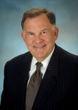Bill Holder is the Ernst & Young Professor of Accounting at the University of Southern California. Dr. Holder also serves as a board member of the Governmental Accounting Standards Board. He received his Bachelor’s degree from Oklahoma State University and his Masters and Doctoral degrees from the University of Oklahoma. His academic and professional interests include financial accounting and reporting policy, auditing standards, and non-business organizations. Dr. Holder has been twice selected by Accounting Today as one of the “Top 100 Most Influential People in Accounting” and received the AICPA’s Distinguished Educator Award. Professor Holder is the author of numerous articles, research monographs, and books. He has served as a member of the Board of Directors, Governing Council, Accounting Standards Executive Committee, Special Committee on Financial Reporting, the Government Accounting Committee and the Compliance Auditing Task Force of the AICPA. He has also chaired the AICPA’s Audit Committee and the Professional Conduct Committee of the California Society of CPAs. Currently, he chairs the AICPA’s Board of Examiners. Prior to his appointment in 1979 Dr. Holder served on the faculty at Texas Tech University.
Bruce Meikle - Chief Compliance Officer, Capital Research and Management Company
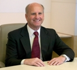Mr. Meikle joined The Capital Group Companies in 2004 as a senior member of management. Mr. Meikle serves as the Companies Chief Compliance Officer and as Chair of the Audit Committee. His responsibilities also include oversight of the compliance assessment, operational risk management, and business continuity functions supporting the Companies mutual fund, institutional, and personal investment businesses. Prior to joining the Company, Bruce was the Regional Managing Partner of Deloitte’s Enterprise Risk Services business in the Pacific Southwest. During his 26 years at Deloitte, he represented the Firm in a variety of businesses including their financial audit practice, the mergers and acquisitions area, and in the enterprise risk services group.
He received his MBA from the University of Southern California and his undergraduate degree from the University of California at Santa Barbara. He is active in the community serving as the Chairman of the Board of Directors for the Alliance for the Arts of the Thousand Oaks Performing Arts Center, and was formerly the Chairman of the Board of Directors of the Ventura County World Affairs Council and an Executive Board Member of the United Way of Ventura County. He is married with two children and enjoys skiing, golf and other outdoor activities.
Ed Merino - CEO, Office of the Chairman
Ed Merino is chief executive officer and founder of Office of the Chairman. Ed is a boardroom executive coach whose clients are board chairmen, board members, CEOs, and their direct reports. Key to his coaching is helping executives move from “success to significance.” His clients include Fortune 500 companies in Finance, Media and Entertainment, Banking, and Technology, as well as private and family businesses. For over a decade, Ed has been an adjunct coach with Right Management Consultants, the world’s leading career transition and organizational consulting firm. In this capacity, he counsels with Right Management’s most senior executive clients. He has developed a process that allows executives to authenticate themselves. Some call it “the essential biography”—Ed calls it the “Bio B,” a word picture that describes who you are, not what you have been or what you have done.
Ed has over 30 years of boardroom experience as board chairman, CEO and board member (including public board experience). He also served for six years as director of corporate governance at a “Big Four” accounting firm’s Orange County regional headquarters. He is Chairman Emeritus of the Forum for Corporate Directors, Orange County, and currently serves on the board of the National Association of Corporate Directors, Southern California chapter. He has created a Director Education Roadmap showing executives how to develop a governance education pedigree through programs at Harvard Business School, Stanford Law School and UCLA Anderson School of Business. Ed received a Director Certification from UCLA’s Anderson School of Business’s Directors’ College. He studied mechanical and electrical engineering at the United States Naval Academy, Annapolis, Maryland.
Ed has been quoted in the Wall Street Journal, Orange County Register, Orange County Business Journal, Directors and Boards, Directorship, CIO magazine, Corporate Boardmember magazine and other publications. In addition, he participated in the “Blue Ribbon Commission on Board Evaluation” publication of the National Association of Corporate Directors.
Girard Miller is an investor, strategic consultant and commentator, residing in Malibu California after for 33 years in the public sector and investments. His column, Girard Miller's Public Benefits Beat, appears regularly in Governing magazine and its online management letter. He is a voting member of the Governmental Accounting Standards Board.
From 2003 to 2006, Girard was the president of the Janus mutual funds and was Chief Operating Officer of Janus Capital Group, Inc. Prior to that, he was the president and chief executive officer of the ICMA Retirement Corporation for ten years.
During his services at Janus Capital and Icma Retirement Corporation, Miller was instrumental in designing and implementing governance and executive compensation plan changes.
Girard's career began in the public sector. After working for ten years in local governments in New Jersey and Michigan, he joind the professional staff of the Government Finance Officers Association (GFOA) in 1981. He authored 12 publications for GFOA.
He is a Chartered Financial Analyst (CFA) and fellow of the National Academy of Public Administration.
Chris Mitchell, Director - Special Value Opportunities Fund LLC
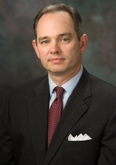Mr. Mitchell is a director of Special Value Opportunities Fund LLC, a $1.5 billion registered investment fund managed by Tennenbaum Capital Partners, LLC, Santa Monica; First Chicago Bancorp, a $1 billion bank holding company and portfolio company of the private equity firm Castle Creek Capital; and Reis, Inc., a New York based real estate information company. He chairs the Audit Committees of all three firms and is a member of other committees including Transaction, Compensation, Nominating and Corporate Governance and ALCO and Risk committees. He is formerly a director of Hanmi Financial Corporation, a $4 billion Los Angeles bank holding company. Mr. Mitchell retired from Deloitte in 2003 as the National Managing Partner of the Mortgage Banking and Finance Companies practice. During his 26 year career at Deloitte he also served as Regional Managing Partner for various practices including audit, enterprise risk services, and financial services. In addition, he served as an Accounting Fellow to the Federal Home Loan Bank Board in Washington, D.C. from 1985 to 1987. Mr. Mitchell serves as an adjunct professor of accounting at the University of Redlands and is the Chapter President of the National Association of Corporate Directors, Southern California. Mr. Mitchell is a graduate of the University of Alabama.
Kevin Murphy - Kenneth L. Trefftzs Chair in Finance, USC Marshall School of Business
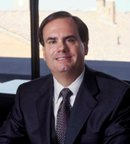Kevin J. Murphy, is the Kenneth L. Trefftzs Chair in Finance in the department of finance and business economics at the Marshall School, professor of business and law in the USC Law School, and professor of economics in the USC Economics Department.
In addition to his primary appointment in the Marshall School, he holds joint appointments in the USC Law School and in the USC Economics Department. Prior to joining USC in July 1995, Professor Murphy spent four years on the faculty of the Harvard Business School and seven years on the faculty of the University of Rochester's William E. Simon Graduate School of Management.
Professor Murphy is an internationally known expert on executive compensation, and is the author of more than forty articles, cases, books, or book chapters relating to compensation and incentives in organizations. Results from his research on executive compensation have appeared in the popular, business and professional press. In 1992 and 1993, Dr. Murphy conducted the United Shareholders Association survey of executive compensation practices in the 1,000 largest U.S. corporations. In addition, Mr. Murphy was a commissioner on the National Association of Corporate Directors' Blue Ribbon Commission on Executive Compensation in both 1992 and 2003, has advised several organizations on executive compensation policies, and helped the SEC formulate their 1992 disclosure rules for top management pay. He spent the 1994-1995 academic year on leave from Harvard as Visiting Scholar and Consultant at Towers Perrin, where his activities included making formal presentations and leading informal roundtable discussions on executive compensation to clients nationwide, as well as being involved in a variety of consulting engagements. He has given speeches and presentations on compensation and incentives to a variety of academic and practitioner audiences, including the Conference Board, the American Compensation Association, and the Board of Governors of the Federal Reserve.
His research has been interdisciplinary, spanning economics, finance, accounting, and organizational behavior, and his publications have consequently reflected a broad spectrum of outlets including finance journals (Journal of Financial Economics, Journal of Finance, Journal of Applied Corporate Finance), economics journals (Journal of Political Economy, Quarterly Journal of Economics, American Economic Review, Rand Journal of Economics, Journal of Economic Perspectives, Economic Journal), accounting journals (Journal of Accounting and Economics, Journal of Accounting, Auditing, and Finance), industrial relations journals (Industrial and Labor Relations Review), law journals (University of Chicago Law Review, University of Cincinnati Law Review), management journals (Harvard Business Review, Employment Relations Today), as well as the popular press (New York Times, Los Angeles Business Journal).
Professor Murphy is a member of Phi Beta Kappa and the American Economic Association, an associate editor of the Journal of Financial Economics and the Journal of Corporate Finance, a former associate editor of the Journal of Accounting and Economics, and the former chairman of the Academic Research Committee of the American Compensation Association. He received his PhD in Economics in 1984 from the University of Chicago, and earned his BA (summa cum laude) from UCLA in 1979.
Mark Nadler - Partner, Oliver Wyman, Delta Organization & Leadership LLC
Mark B. Nadler is a Partner at Oliver Wyman, Delta Organization & Leadership LLC, consulting to CEOs, boards, and senior executives of major corporations on a broad range of issues involving leadership and organizational change. Mr. Nadler has provided consultation, coaching, and talent assessment to major companies in a variety of industries including media and entertainment, health care, financial services, manufacturing, energy, and consumer products. In recent years, much of his work has been with boards and CEOs of private equity portfolio companies. Mr. Nadler created and for many years led the firm’s global Strategic Communication consulting practice. He also served as the firm’s Executive Editor, and was responsible for Delta’s editorial and publishing activities for more than a decade. Before joining Delta in 1995, Mr. Nadler worked for 22 years in the newspaper business as a reporter, editor, and senior newsroom executive. Most recently, he spent five years as Vice President and Executive Editor of The Chicago Sun-Times, at that time one of the 10 largest metropolitan newspapers in the U.S. He worked as a senior editor at The Wall Street Journal, and spent 11 years with Knight-Ridder Newspapers. He supervised the reporting and editing of a series of articles that was awarded the Pulitzer Prize for feature writing, and has twice served as a juror for the Pulitzer Prizes in journalism. Mr. Nadler is a co-editor of Building Better Boards: A Blueprint for Excellence in Governance (Jossey-Bass, Publishers, 2006.) He has assisted in writing numerous publications concerning the management of organizational change, including two previous books: Competing by Design: The Power of Organizational Architecture, by David Nadler and Michael Tushman (Oxford University Press, 1997); and Champions of Change: How CEOs and Their Companies Are Mastering the Skills of Radical Change, by David Nadler (Jossey-Bass, Publishers, 1998). He is the co-author, with David Nadler, of “Performance on the Executive Team: When to Pull the Trigger,” in Executive Teams (Jossey-Bass, Publishers, 1998), and “The Success Syndrome,” in Leader to Leader (Jossey-Bass, Publishers, 1999), and with David Nadler and Peter Thies of “Culture Change in the Strategic Enterprise” in The International Handbook of Organizational Culture and Climate (Wiley & Sons, 2001). Mr. Nadler holds a BA in English from George Washington University, where he graduated Phi Beta Kappa. In 1989-90, he served as an adjunct professor at the University of Minnesota’s School of Communications, teaching senior-level courses in the management of communications organizations.
Maurice "Sandy" Nelson - CEO, PNA Group, Inc.
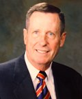Maurice “Sandy” Nelson, Jr. has been President or Chief Executive Officer of some of the world’s largest metals companies for more than twenty years. From 1987 to 1991, Mr. Nelson was President of ALCOA’s Sheet & Plate Division, one of its largest and most profitable divisions. From 1991 to 1996, Mr. Nelson was President and Chief Executive of Inland Steel Company, at the time an NYSE listed company and the fourth largest integrated steel producer in North America, with 10,000 employees and $3 billion in sales. In 1997, Mr. Nelson became President, CEO and COO of the Earle M. Jorgensen Company, the nation’s largest independent metals distributor employing over 1700 people at 37 locations throughout the United States and Canada and generating almost $1.8 billion in sales. Under Mr. Nelson’s leadership, EMJ’s unique operating innovations almost doubled its growth while operating with far fewer employees per unit of sales than the industry norm. EMJ’s improved performance enabled the employee and private equity owned company to go public in 2005 before being acquired by Reliance Steel in 2006. Mr. Nelson accepted his latest challenge in February 2007 when he became President and CEO of the PNA Group, a private equity-owned metals service center operator with $1.7 billion in sales and more than 1500 employees and 22 locations throughout the U.S. It is the leading company serving the non-residential construction sector handling almost 2.6 million tons of steel per year.
In 2002, Mr. Nelson was voted Executive of the Year in the metal service center industry and in 2004 to 2005, he served as Chairman of the Metals Service Center Institute. Mr. Nelson also chaired the College of Engineering Advisory Board at the Georgia Institute of Technology where he served on the Board for a period of five years.
Mr. Nelson has a BS in Engineering from the Georgia Institute of Technology and a MS in Industrial Engineering from the University of Tennessee. Mr. Nelson also holds an honorary Doctorate Degree from Marycrest College. Mr. Nelson served in the United States Air Force for two tours of duty during the Vietnam War.
George Paulin is Chairman and CEO of Frederic W. Cook & Co., Inc. He has been a consultant specializing in the areas of executive and employee compensation for more than 25 years, and is nationally known as an advisor to board compensation committees and management.
He joined Frederic W. Cook & Company in 1982. He was named president of the firm in 1994, and assumed his current responsibilities in 2001. He opened the firm’s Chicago office in 1983, and in 1987 he opened the office in Los Angeles where he currently resides. During the past two years, the Cook firm has served more than 50% of the current Fortune 200 companies, and over 1,800 major U.S. companies since the firm was founded as an independent organization owned by its principal consultants in 1973.
Mr. Paulin has ongoing advisory relationships with a diverse list of companies. Examples of those where he is retained as the independent board compensation committee advisor include Apple Computer, Baxter, Cisco Systems, Gap, Hewlett-Packard, 3M, Northrop Grumman, Pfizer, Pritzker Trust, Procter&Gamble, Qualcomm, Starbucks, Wells Fargo, and Yahoo!. In 2007, he attended over 150 board compensation committee meetings.
He was a member of the WorldatWork (formerly the American Compensation Association) faculty for more than 15 years until 2002, where he was instrumental in developing its certification courses on executive compensation. He served on the WorldatWork Executive Compensation Council from 1991 to 1997. In 2004, he was named to the Advisory Board of the National Association of Stock Plan Professionals (NASPP), and made an honorary life member of WorldatWork.
Mr. Paulin has a master’s degree from the Institute of Labor and Industrial Relations at the University of Illinois, where he has been active in alumni affairs and received their Distinguished Alumni Reward in 1990.
Evan Rosenberg - Senior Vice President, Chubb Specialty Insurance
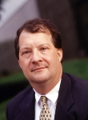Evan J. Rosenbergis a Senior Vice President of Chubb & Son, a division of Federal Insurance Company. He is the Global Specialty Product Manager for Chubb Specialty Insurance (CSI).
Prior to his current role, Evan was Chief Underwriting Officer for Executive Protection. He has overall underwriting responsibility for all specialty lines written in CSI including D & O, E & O, Fiduciary Liability, Employment Practices, Financial Fidelity, Crime and K&R. He has held several positions in Chubb’s home and field offices, in Executive Protection and the Department of Financial Institutions. From 1991 – 1992, Evan was the San Francisco Marsh Finpro regional manager for financial institutions. Evan began his underwriting career at Chubb in 1983.
He earned a BS in Economics in 1980 from Pennsylvania State University.
Allan Rudnick - Founder, Kayne Anderson Rudnick Investment Management
Allan M. Rudnick is a founder of Kayne Anderson Rudnick Investment Management (KAR). He recently retired from KAR after holding the positions of Chairman, President and Chief Investment Officer. Mr. Rudnick's new firm, Family Offices, LLC is a private wealth management firm in Beverly Hills. Before joining KAR in 1989, Mr. Rudnick was Chief Investment Officer for The Pilgrim Group of Mutual Funds. He has over 40 years of experience in the investment management industry, having started his career in 1966 at Oppenheimer and Co., initially as a securities analyst and then a mutual fund manager. Mr. Rudnick serves on a number of boards and committees of non-profit and charitable organizations, and is currently a member of the Executive Committee of the Bogart Pediatric Cancer Research Program at Children's Hospital Los Angeles. Mr. Rudnick earned a B.A. in Economics from Trinity College, and an M.B.A. from Harvard University. He is a member of the CFA Society of Los Angeles, Inc. and the CFA Institute.
Les Sussman - Managing Director, Resources Audit Solutions
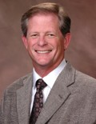Lester M. Sussman, CPA has 30 years of professional services and private industry experience in accounting and auditing. Mr. Sussman is currently the Managing Director of Resources Audit Solutions (RAS), the arm of Resources Global Professionals that provides corporate governance and risk management services, including Sarbanes Oxley compliance and internal audit. As an audit partner with Deloitte & Touche, Mr. Sussman held several leadership positions, including Partner in Charge of the Financial Services Group for the Pacific Southwest Region, Partner in Charge of the Capital Markets consulting practice for the West Region, Partner in Charge of the Woodland Hills office, National Director of Recruiting and College Relations and President of the Deloitte & Touche Foundation. After 26 years with Deloitte, Mr. Sussman joined Gemstar TV Guide as Senior Vice President of Finance, with responsibility for all aspects of the finance organization for this $900 million public company with operations in media, publishing, technology and licensing. In early 2005, Mr. Sussman joined Resources Global as an associate to lead the internal Sarbanes Oxley compliance initiative. After the successful completion of the project, Mr. Sussman assumed his current role as global leader of the RAS practice. Mr. Sussman currently serves as a member of the Executive Committee and the Board of Directors of Braille Institute and is also a member of the Board of Trustees of the Children’s’ Bureau.
John Cardis, Director, Avery Dennison Corporation
John T. Cardis currently sits on the Board of Directors for Edwards Lifesciences, Avery Dennison and Energy East Corporation. Prior to his board experience, Mr. Cardis was a Partner at Deloitte & Touche for nearly forty years.
At Deloitte, Mr. Cardis served on the Executive Committee for over 18 years and was involved in all aspects of leading a professional services firm that generated $6 billion in the United States and $15 billion globally. During his tenure at Deloitte, Mr. Cardis also guided the firm through the challenges imposed by the Sarbanes-Oxley Act and addressed the changing governance and control environment. Mr. Cardis was extensively involved in Deloitte & Touche’s four-year merger integration process and worked with a variety of clients in their merger and integration activities. Mr. Cardis has spent more than thirty years working with audit committees, management and boards of some of Deloitte’s largest clients.
Mr. Cardis is a graduate of Marian College in Indianapolis, Indiana, where he received an honorary doctorate in public service in 2003. Mr. Cardis also completed the Harvard University Graduate School of Business Advanced Management Program. Mr. Cardis is on the Board of Trustees of St. John’s Medical Center in Jackson, Wyoming as well as Marian Colleage. Mr. Cardis was also awarded the distinction of Director of the Year in 2007 by Corporate Governance Forum for Corporate Directors.
Jim Williams - Partner, TPC Capital
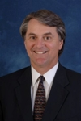Mr. Williams is a Partner in Texas Pacific Group, one of the largest private equity firms in the world, which owns or controls over 30 companies. He serves on the Boards of several public and private healthcare and technology companies. Prior to joining Texas Pacific Group in early 1999, Mr. Williams served as President of Kaiser/Group Health, President of Kaiser Permanente International and as the national Senior Vice President of Operations and Strategic Development for Kaiser Permanente, the largest healthcare delivery and financing organization in the U.S. Prior to joining Kaiser in 1994, Mr. Williams was Managing Partner of a large international management consulting firm. Mr. Williams received his B.S. with distinction and his M.B.A. with honors from the University of Southern California, where he was also named the University’s Outstanding Scholar-Athlete.
Stephen Brown, Director & Senior Counsel, Corporate Governance & Business Affair, TIAA-CREF
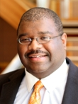Stephen L. Brown serves as Director of Corporate Governance for Teachers Insurance and Annuity Association of America–College Retirement Equities Fund (TIAA-CREF), a $400 billion full-service financial services group of companies.
On behalf of the boards of the TIAA-CREF group of companies, Mr. Brown and his colleagues in the Corporate Governance Group work to enhance the governance/social responsibility practices of companies held within TIAA-CREF’s investment portfolios with the objective of increasing shareholder value and improving long term performance of targeted companies. Additionally, Mr. Brown advises management and the boards of the TIAA-CREF group of companies on internal corporate governance operations.
Prior to joining TIAA-CREF, Mr. Brown practiced corporate and securities law with Wilmer, Cutler, Pickering, Hale and Dorr, LLP and Skadden, Arps, Slate, Meagher and Flom, LLP in New York City. At both firms, Mr. Brown advised investment advisers, hedge, private equity and mutual funds, and industrial companies on capital formation, general corporate law, and securities regulatory matters. Additionally, he represented Fortune 500 corporations, boards of directors and executives in a variety of securities enforcement matters and corporate internal investigations. Prior to practicing law, Mr. Brown was a financial analyst with Goldman Sachs.
Mr. Brown’s pro bono practice has included advising several New York City charter schools and economic development organizations. He is currently a member and immediate past president of the Englewood Public School Board in Englewood, New Jersey, a member of the boards of Harlem Renaissance Economic Development Corporation, Queens Economic Development Corporation and the Public Interest Law Foundation at Columbia University Law School. Mr. Brown received his B.A. with honors from Yale University and his J.D. from Columbia University Law School where he was a Harlan Fiske Stone Scholar.
Linda Fayne Levinson, Director, Jacobs Engineering
Ms. Levinson is an independent investor and advisor to professionally funded, privately held ventures. From 1997 until 2004, Ms. Levinson was a Partner of GRP Partners, a venture capital firm that invests in early stage technology companies. From 1982 until 1998, Ms. Levinson was President of Fayne Levinson Associates, an independent consulting firm advising major corporations. Prior to that, Ms. Levinson was an executive at Creative Artists Agency, Inc.; a Partner of Wings Partner, a Los Angeles-based merchant bank; a Senior Vice President of American Express Travel Related Services Co., Inc.; and a Partner of McKinsey & Company, where she became the first woman partner in 1979. Ms. Levinson also serves as a member of the Boards of NCR Corporation; Ingram Micro, Inc.; and The Western Union Company.
David Siegel, Managing Partner, Irell & Manella LLP
 Mr. Siegel's practice is concentrated on the defense of securities class and investor claims against corporations and their directors and officers; SEC enforcement proceedings; and other complex commercial litigation matters. He was profiled in a review by California Law Business as one of the top 5
Mr. Siegel's practice is concentrated on the defense of securities class and investor claims against corporations and their directors and officers; SEC enforcement proceedings; and other complex commercial litigation matters. He was profiled in a review by California Law Business as one of the top 5
Mr. Siegel has acted as lead counsel in defense of numerous major stockholder class and derivative actions in both federal and state courts throughout the
Given the nature of the areas in which he practices, Mr. Siegel frequently counsels corporate Boards and senior management in respect of litigation and litigation avoidance, regulatory enforcement and criminal investigations, indemnification, insurance, and internal investigations.
Mr. Siegel has chaired and is a frequent speaker at various seminars concerning securities litigations, class actions, and trial techniques, including as chair of the "PLI Securities Litigation & Enforcement Institute." He has also served on various advisory panels in the field of securities litigation, including as one of eight members of the National Advisory Panel for Directors and Officers Litigation for National Union Insurance Co., and on the California State Senate Blue Ribbon Task Force on Shareholder Litigation. He is listed by Los Angeles Magazine as one of the region's “Super Lawyers.”
In 1981, Mr. Siegel served as an extern for the Honorable Justice Wiley Manuel of the California Supreme Court.
Ashwin Rangan, Former CIO, Wal-Mart
Ashwin Rangan currently serves as the Chief Information Technology Officer with Marketshare Partners LLC, a young, Private Equity backed company. MSP is a worl leader in offering scientific and mathematically based Marketing insights to the Chief Marketing Officers of some of the world’s most respected and valuable Brands.
Most recently, he was engaged with Bank of America’s Consumer Banking Sector. He assisted the Bank with defining, developing and implementing new strategies in the Web-2.0 space. Ashwin stepped-down in 2006 as the General Manager and Chief Information Officer (CIO) of Wal-Mart global.com. Prior to this assignment, he served as CIO for walmart.com. Before that, he was senior vice president and CIO of Conexant Systems Inc. in Newport Beach, CA. Ashwin was a member of the founding team that spun-out Rockwell Semiconductor Systems (in January 1999) and created Conexant. And before joining Rockwell Semiconductor Systems in 1995, he served in various senior management positions at AST Computer in Irvine, CA, until AST was acquired by Samsung Electronics.
He serves as a Board member with a handful of private companies. He is currently associated with Monarch Information and Technology Services, Inc. (www.mitsinc.com), Integrien (www.integrien.com), Suggestica (www.suggestica.com) and QL2 (www.ql2.com).
Ashwin served as a Director on the Board of PiVX, a publicly-traded company HQ-d in Newport Beach, CA. While there, as a Management Committee member, Ashwin’s strategic insights and contributions led to the sale of PiVX to the Lotus Fund, a PE group.
He has recently authored a book entitled “The Insightful CIO: Strategic Conversations”. The book is expected to be released in the Spring of 2008. Copies can be reserved by emailing TheCIO@insightfulgroup.com.
Ashwin has a Masters in Industrial Engineering and Management with an emphasis on IT and Operations Management from NITIE , Bombay, and a BS in Mechanical Engineering from the Bangalore University, India . He is accredited with both CPIM and CIRM by the American Production and Inventory Control Society . He is accredited with a CSP by the Institute for Certification of Computing Professionals. He is a Certified Information Systems Auditor. Ashwin was most recently accredited as a Certified Corporate Director by the Directors Institute at UCLA. He is a long-standing member of the International MENSA.
Richard Bennett - Chief Executive Officer, The Corporate Library LLC
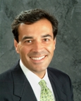Richard A. Bennett, 44, received his B.A. with honors from Harvard University in 1986 and his M.B.A. from the University of Southern Maine in 2000. He has an extensive background in politics and government service as well as a wide range of private sector experience.
A former President of the Maine State Senate, Mr. Bennett served four terms in the Maine Senate and two terms in the Maine House of Representatives. In 1994 he was the Republican nominee for U.S. Congress in Maine’s second district.
He currently serves as Chief Executive Officer of The Corporate Library, LLC, an independent research firm focusing on corporate governance and director/executive compensation. Earlier, he served as a consultant with Lens Governance Advisors, LLC, founded and owned by pioneering shareholder activist Robert A.G. Monks. He served as director of corporate governance for Lens Investment Management, LLC, from 1997 to 2002. Mr. Bennett is also a member and manager of The Corporate Library, LLC; an independent director of Biddeford Internet Corporation; and a non-executive director of Trucost plc.
He has been written about in Pensions & Investments, The Daily Deal, and Barron’s, and cited in numerous publications including BusinessWeek, USA Today, Fortune, and the Wall Street Journal. A member of the International Corporate Governance Network and the Council of Institutional Investors, Mr. Bennett has spoken publicly about governance issues at the U.S. Securities and Exchange Commission, Columbia University, University of Southern Maine School of Business, and for The Conference Board and the Investor Responsibility Research Center, among others.
In 2005 Mr. Bennett was appointed by President Bush to the President’s Commission on White House Fellowships. He also serves as a director of the Maine Heritage Policy Center and of the Maine League of Conservation Voters, is a fellow with the U.S.-Japan Leadership Program, was delegate to the 1996 and 2004 Republican National Conventions, and participated as an observer to the national election in Macedonia in 2002. He is a private pilot, farms Christmas trees, and enjoys long-distance running. He lives in Oxford, Maine, with his wife and two children.
Bob Rollo, Partner, Heidrick & Struggles
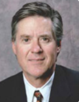During his 24 years in executive search, Bob Rollo has been recognized as one of the nation's leading recruiters in "The Global 200," "The New Career Makers," "The Rites of Passage" and most recently in "Headhunters and How to Use Them." He has successfully completed more than 400 senior-level executive searches, including board member, CEO, president and COO positions. Previously, Bob was a vice chairman and leader of Highland Partners' Specialty Practice Sector, which included its global Board of Directors Practice. Additionally, he was the managing partner of the firm's Los Angeles office. Bob was the founding partner of Rollo Associates, a Los Angeles-based provider of nationwide executive search services. He established the firm in 1992 and specialized in recruiting leaders on behalf of a portfolio of prominent clients ranging from emerging technology companies to established multinationals. Prior to founding Rollo Associates, Bob was a senior partner for 11 years with Korn/Ferry International, heading that firm's Southern California region. Before joining the executive search industry, Bob served as director of Strategic Planning for a Fortune 500 company and later as Vice President, Marketing for one of its major divisions. Beginning his career in 1973, he held commercial lending and corporate banking positions for five years with Union Bank of California. He served as a Lieutenant in the U.S. Navy from 1970 to 1973. He was Regimental Commander in Officer Candidate School and received the Navy's Outstanding Junior Officer Award in 1971. Bob received his bachelor's degree with honors and MBA from the University of Southern California (USC). He is a past member of USC's Board of Trustees and a former president of the USC Alumni Association. Bob is Chairman of the Southern California Chapter of the National Association of Corporate Directors and vice chairman of the Los Angeles Sports Council. He is a former Vice Chairman of the U.S. Olympic Committee's Nominating and Governance Committee board member of the Trust Services of America, Huntington Hospital, Mayfield Senior School and the Southern California Healthcare System.
Check back often for speaker updates.
| back to top |
Hotel Information
PARTICIPANTS, PLEASE READ CAREFULLY! Please select one of the hotels listed below during online registration process (or "I do not require accomodations" if you will not be staying at a hotel during this event). Please note: this selection is being requested for our information ONLY - you will still need to contact your chosen hotel directly in order to make a reservation.
The Omni Hotel
The Omni Hotel in Downtown Los Angeles is a four-star, top-tier hotel situated approximately 2.5 miles north of the USC campus in downtown Los Angeles. There are many fine restaurants and shops in close proximity to the hotel. If you choose to stay at the Omni, please make your reservation as soon as possible and be sure to mention that you are attending an event at USC for a prearranged discounted room rate. You will also need to arrange for your own transportation between the hotel and campus on a daily basis. Hotel Information 251 South Olive Street Los Angeles,California 90012 Phone: (213) 617-3300 Fax: (213) 617-3399.
A link will be provided for registration.
The Hilton Checkers Hotel
The other option is the Hilton Checkers Hotel, Los Angeles. Also located in downtown Los Angeles approximately 2 miles from campus, the Hilton Checkers dates back to the 1920's, and has recently been fully restored. It is the only four-diamond boutique hotel in Los Angeles. You will need to arrange for your own transportation between the hotel and campus on a daily basis. For reservations, please call (800) HILTONS
| back to top |
ISS and Continuing Education
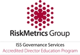This Program has been accredidated by Institutional Shareholder Services for director education.
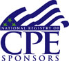
The University of Southern California is registered with the National Association of State Boards of Accountancy (NASBA) as a sponsor of continuing professional education on the National Registry of CPE Sponsors. State boards of accountancy have final authoriey on acceptance of individual courses for CPE credit. Complaints regarding registered sponsors may be addressed to the National Registry of CPE Sponsors, 150 Fourth Avenue Notrh, Suite 700 Nashville, TN, 37219-2417. Web site: www.nasba.org.
The 2008 USC Corporate Governance Summit has been approved for 13 CPE units.
Program Level: Advanced
Delivery MethodL Group-Live
Advanced Preparation: None
To register for Corporate Governance Summit 2008, please call our offices at (213) 740 - 8990.
The Corporate Governance Summit is presented in partnership with Resources Global Professionals, a multinational professional services firm (NASDAQ: RECN) that helps business leaders execute internal initiatives. Working as members of client teams, Resources partners with clients to drive internal change across all parts of a global enterprise -- finance and accounting, information management, human capital, supply chain management, legal and internal audit. Resources Global has more than 80 offices across the U.S, Europe and Asia Pacific. For more information, go to www.resourcesglobal.com.
Summary of 2007 Summit |
Summary of 2006 Summit |
For more information regarding refund, complaint and program cancellation policies, please contact our offices at 213.740.8990.